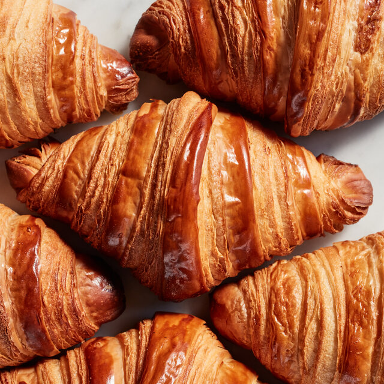

Cafe Specialties
-
Fresh Brewed Coffee
Our freshly brewed coffee is made from high-quality beans, sourced from the best coffee-growing regions. Enjoy the rich and robust flavor in every sip.
-

Buttery Croissant
Our croissants are made with layers of buttery, flaky dough, perfect for a delightful breakfast or a tasty snack at any time of the day.
-
Signature Sandwich
Our signature sandwich is made with fresh ingredients, featuring a variety of meats, cheeses, and vegetables, all served on artisan bread.
-

Fruit Smoothie
Our fruit smoothies are made with fresh, ripe fruits, blended to perfection for a refreshing and nutritious drink.